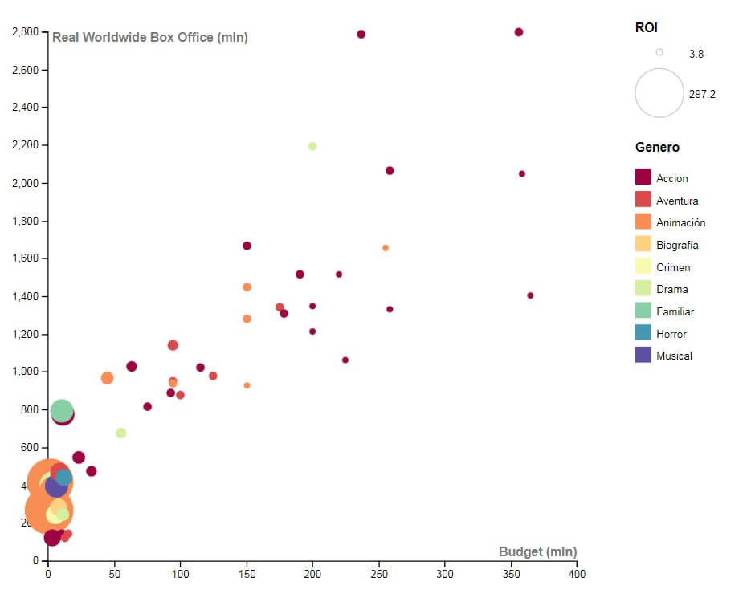

"
Trinidad Forster Moraga
|
Diseño UC
Highest grossing movies in history

ROI
BOX OFFICE
COMPARACIÓN PROMEDIOS
GASTO Y GANANCIA EN PELÍCULAS ANIMADAS CON ANIMALES DENTRO DE LOS PERSONAJES PRINCIPALES